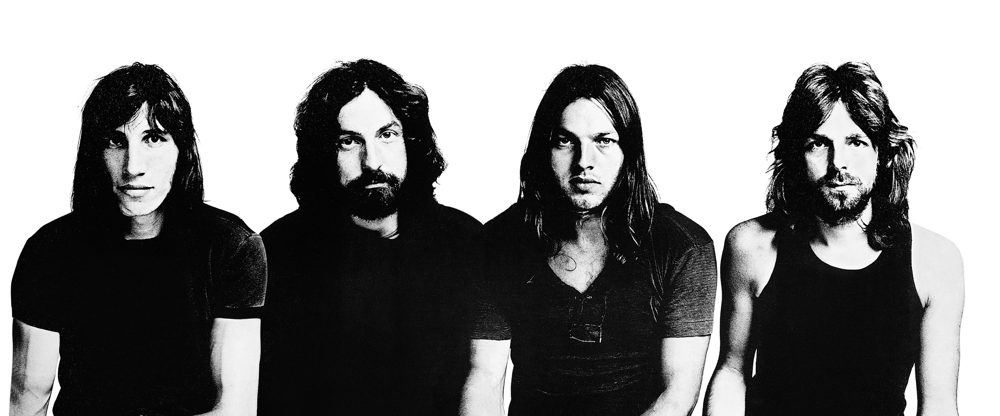
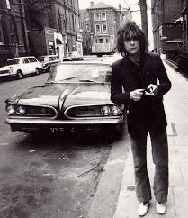

Biografia
Pink Floyd foi uma banda britânica de rock formada em Londres em 1965. Ganhando seguidores como um grupo de rock psicodélico, eles se destacaram por suas composições longas, pela experimentação sonora, pelas letras filosóficas e pelas apresentações ao vivo criativas, o que levou a se tornarem uma banda líder do gênero do rock progressivo. Eles são um dos grupos mais bem-sucedidos comercialmente e influentes da história da música popular.
O grupo foi fundado pelos estudantes Syd Barrett (guitarra, vocal), Nick Mason (bateria), Roger Waters (baixo, voz) e Richard Wright (teclados, voz). Sob a liderança de Barrett, eles lançaram dois singles e um álbum de estreia de sucesso, The Piper at the Gates of Dawn (1967). David Gilmour entrou para a banda como guitarrista e vocalista em dezembro de 1967; Barrett saiu em abril de 1968 devido à deterioração de sua saúde mental. Waters se tornou o letrista principal e líder temático, desenvolvendo os conceitos por trás dos álbuns The Dark Side of the Moon (1973), Wish You Were Here (1975), Animals (1977), The Wall (1979) e The Final Cut (1983). A banda também compôs várias trilhas sonoras para filmes.
Após tensões pessoais, Wright deixou o grupo em 1979, seguido por Waters em 1985. Gilmour e Mason continuaram a se apresentar como "Pink Floyd", reunidos mais tarde por Wright. Os três produziram mais dois álbuns — A Momentary Lapse of Reason (1987) e The Division Bell (1994) — e participaram de outros dois antes de entrar em um longo período de inatividade. Em 2005, todos, exceto Barrett, se reuniram para uma apresentação única no evento de conscientização global Live 8. Barrett morreu em 2006 e Wright em 2008. O último álbum de estúdio do grupo, The Endless River (2014), foi baseado em material inédito das sessões de gravação de The Division Bell.

A banda foi um dos primeiros grupos psicodélicos britânicos e foi influente em gêneros como o rock progressivo e a música ambiente. Quatro álbuns chegaram ao topo das paradas estadunidenses ou britânicas; as músicas "See Emily Play" (1967) e "Another Brick in the Wall, Part 2" (1979) foram seus únicos singles entre os dez mais ouvidos em ambos os territórios. A banda foi introduzida no Rock and Roll Hall of Fame em 1996. Até 2013, eles haviam vendido mais de 250 milhões de discos em todo o mundo, com The Dark Side of the Moon e The Wall sendo dois dos álbuns mais vendidos de todos os tempos.
Fonte: Wikipedia